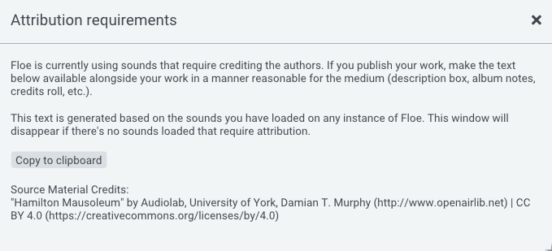

Attribution
At a glance
If a sample library requires attribution:
- Floe will show you the required attribution text.
- Copy-and-paste this text alongside wherever you share your music.
- You own your music (sell it, relicense it, etc.) - you just need to credit the creator of the sounds.
The above bullet points assume the license is the “Creative Commons Attribution 4.0 International” license — a very common attribution-required license.
About attribution-required licenses
A license tells you what you can and can’t do with a sample library. Most developers choose a license that allows you to use the sounds in your music without having to credit them.
However, some developers choose an attribution-required license such as the widely-used Creative Commons Attribution license (also known as “CC BY”).
This license allows you to use the sounds for free, even in commercial projects, as long as you credit the creator by including a bit of attribution text along with your music. For example, you might include the text in a caption on your website, in the album notes or in a credits roll (or any “reasonable manner”). The music that you create with sounds under this license is yours: you can sell it, stream it, relicense it or give it away; you are just required to credit the sound’s creator.
For some people, giving attribution is a deal-breaker. But here’s some reasons why it might not be so bad:
- Attributions can support the creators of sounds - providing them with recognition, traffic, and potential customers.
- Sharing where your sounds come from helps other musicians find great sounds too - increasing the quality of music everywhere.
- Attributions can look professional and show a high level of care in your work.
How Floe helps
Floe makes it dead-easy to comply with attribution requirements. When you load a sound from a library that requires attribution, Floe will show a small icon in the top of the window. Clicking this will show you the exact text that you can copy-and-paste wherever you need to. Floe tracks all attribution requirements across all instances of Floe, so you only need to do it once.

Example of the attribution GUI in Floe
Disclaimer
Whilst this page is based on careful research and understanding of the topic, it is not legal advice.